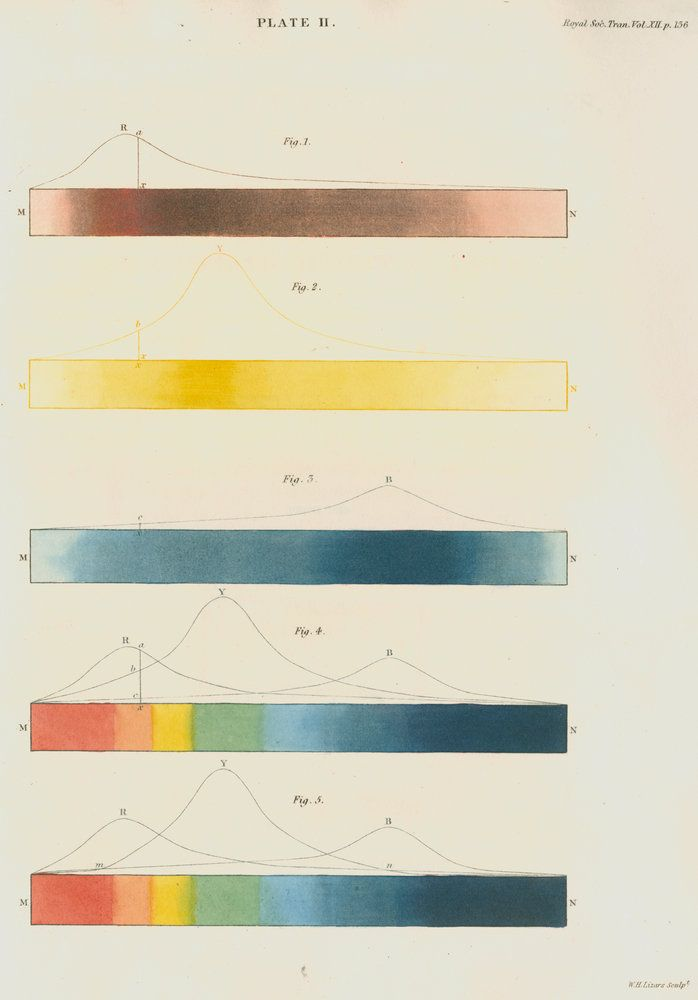

颜色

我们目前为止还未涉及到GLSL的向量类型。在我们深入向量之前，学习更多关于变量和色彩主题是一个了解向量类型的好方法。
若你熟悉面向对象的编程范式（或者说编程思维模式），你一定注意到我们以一种类C的 struct的方式访问向量数据的内部分量。
vec3 red = vec3(1.0,0.0,0.0);
red.x = 1.0;
red.y = 0.0;
red.z = 0.0;
以x,y,z定义颜色是不是有些奇怪？正因如此，我们有其他方法访问这些变量——以不同的名字。.x, .y, .z也可以被写作.r, .g, .b 和 .s, .t, .p。（.s, .t, .p通常被用做后面章节提到的贴图空间坐标）你也可以通过使用索引位置[0], [1] 和 [2]来访问向量.
下面的代码展示了所有访问相同数据的方式：
vec4 vector;
vector[0] = vector.r = vector.x = vector.s;
vector[1] = vector.g = vector.y = vector.t;
vector[2] = vector.b = vector.z = vector.p;
vector[3] = vector.a = vector.w = vector.q;
这些指向向量内部变量的不同方式仅仅是设计用来帮助你写出干净代码的术语。着色语言所包含的灵活性为你互换地思考颜色和坐标位置。
GLSL中向量类型的另一大特点是可以用你需要的任意顺序简单地投射和混合（变量）值。这种能力被（形象地）称为：鸡尾酒。
vec3 yellow, magenta, green;
// Making Yellow
yellow.rg = vec2(1.0); // Assigning 1. to red and green channels
yellow[2] = 0.0; // Assigning 0. to blue channel
// Making Magenta
magenta = yellow.rbg; // Assign the channels with green and blue swapped
// Making Green
green.rgb = yellow.bgb; // Assign the blue channel of Yellow (0) to red and blue channels
混合颜色
现在你了解到如何定义颜色，是时候将先前所学的整合一下了！在GLSL中，有个十分有用的函数：mix()，这个函数让你以百分比混合两个值。猜下百分比的取值范围？没错，0到1！完美！学了这么久的基本功，是时候来用一用了！

看下下列代码中的第18行，这里展示了我们如果是用随时间变化的sin绝对值来混合 colorA 和 colorB。
试着来 show 一下你所学到的：
- 给颜色赋予一个有趣的过渡。想想某种特定的感情。哪种颜色更具代表性？他如何产生？又如何褪去？再想想另外的一种感情以及对应的颜色。然后改变上诉代码中的代表这种情感的开始颜色和结束颜色。Robert Penner 开发了一些列流行的计算机动画塑形函数，被称为缓动函数。你可以研究这些例子并得到启发，但最好你还是自己写一个自己的缓动函数。
玩玩渐变
mix() 函数有更多的用处。我们可以输入两个互相匹配的变量类型而不仅仅是单独的 float 变量，在我们这个例子中用的是 vec3。这样我们便获得了混合颜色单独通道 .r，.g 和 .b的能力。

试试下面的例子。正如前面一个例子，我们用一条线来可视化根据单位化x坐标的过渡。现在所有通道都按照同样的线性变换过渡。
现在试试取消25行的注释，看看会发生什么。然后再试试取消26行和27行。记住直线代表了colorA 和 colorB每个通道的混合比例。
你可能认出了我们用在25行到27行的造型函数。试着改写他们！是时候把前几张的内容结合起来探索一些新的渐变。试试下列挑战：

创作一个渐变来代表 William Turner的落日。
用
u_time做个一日出和日落的动画。能用我们所学的做一道彩虹吗？
用
step（）函数在做一个五彩的旗子。
HSB
我们不能脱离色彩空间来谈论颜色。正如你所知，除了rgb值，有其他不同的方法去描述定义颜色。
HSB 代表色相，饱和度和亮度（或称为值）。这更符合直觉也更有利于组织颜色。稍微花些时间阅读下面的 rgb2hsv() 和 hsv2rgb() 函数。
将x坐标（位置）映射到Hue值并将y坐标映射到明度，我们就得到了五彩的可见光光谱。这样的色彩空间分布实现起来非常方便，比起RGB，用HSB来拾取颜色更直观。
极坐标下的HSB
HSB原本是在极坐标下产生的（以半径和角度定义）而并非在笛卡尔坐标系（基于xy定义）下。将HSB映射到极坐标我们需要取得角度和到像素屏中点的距离。由此我们运用 length() 函数和 atan(y,x) 函数（在GLSL中通常用atan（y,x））。
当用到矢量和三角学函数时，vec2, vec3 和 vec4被当做向量对待，即使有时候他们代表颜色。我们开始把颜色和向量同等的对待，事实上你会慢慢发现这种理念的灵活性有着相当强大的用途。
注意：如果你想了解，除length（）以外的诸多几何函数，例如：distance(), dot(), cross, normalize(), faceforward(), reflect() 和 refract()。 GLSL也有与向量相关的函数：lessThan(), lessThanEqual(), greaterThan(), greaterThanEqual(), equal() and notEqual()。
一旦我们得到角度和长度，我们需要单位化这些值：0.0到1.0。在27行，atan(y,x) 会返回一个介于-PI到PI的弧度值（-3.14 to 3.14），所以我们要将这个返回值除以 TWO_PI（在code顶部定义了）来得到一个-0.5到0.5的值。这样一来，用简单的加法就可以把这个返回值最终映射到0.0到1.0。半径会返回一个最大值0.5（因为我们计算的是到视口中心的距离，而视口中心的范围已经被映射到0.0到1.0），所以我们需要把这个值乘以二来得到一个0到1.0的映射。
正如你所见，这里我们的游戏都是关于变换和映射到一个0到1这样我们乐于处理的值。
来挑战下下面的练习吧：
把极坐标映射的例子改成选择色轮，就像“正忙”的鼠标图标。
把造型函数整合进来，来让HSB和RGB的转换中强调某些特定值并且弱化其他的。

- 如果你仔细观察用来拾色的色轮（见下图），你会发现它用一种根据RYB色彩空间的色谱。例如，红色的对面应该是绿色，但在我们的例子里是青色。你能找到一种修复的方式来让它看起来和下图一样么？[提示：这是用塑形函数的好机会！]

注意函数和变量
在进入下一章之前让我们停下脚步回顾下。复习下之前例子的函数。你会注意到变量类型之前有个限定符 in，在这个 qualifier (限定符)例子中它特指这个变量是只读的。在之后的例子中我们会看到可以定义一个 out 或者 inout变量。最后这个 inout，再概念上类似于参照输入一个变量，这意味着我们有可能修改一个传入的变量。
int newFunction(in vec4 aVec4, // read-only
out vec3 aVec3, // write-only
inout int aInt); // read-write
或许你还不相信我们可以用所有这些元素来画一些炫酷的东西。下一章我们会学习如何结合所有这些技巧通过融合 (blending) 空间来创造几何形状。没错。。。融合(blending) 空间。